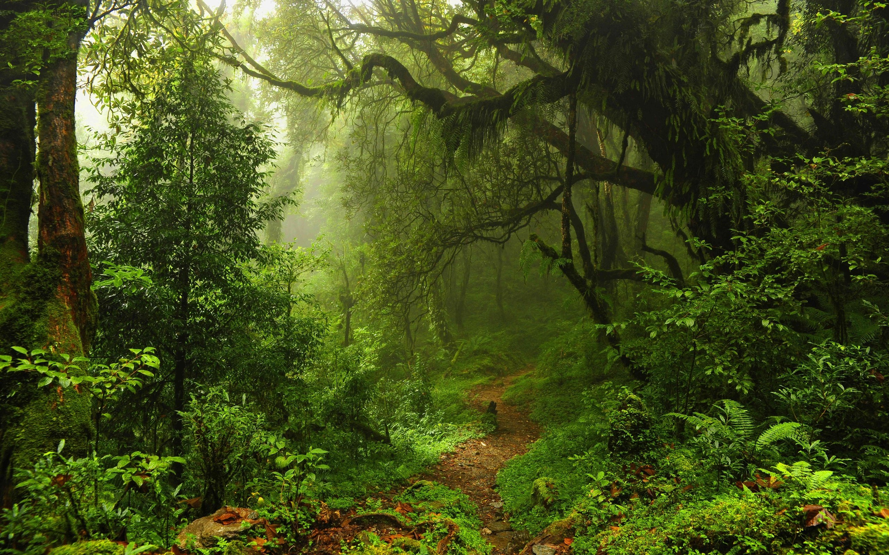

ΜΕΤΑΚΙΝΗΣΕΙΣ
Τα τροπικά δάση παρουσιάζουν σε όσους θέλουν να τα διασχίσουν ένα δρόμο με εμπόδια. Η βλάστηση είναι συνήθως πάρα πολύ πυκνή και η διάνοιξη ενός μονοπατιού θα είναι βραδεία και εξαντλητική. Όταν διέρχεστε μέσα από ένα έδαφος τέτοιας μορφής, η καλυπτόμενη απόσταση κανονικά θα είναι 1 χλμ. την ώρα ή 5 χλμ. περίπου την ημέρα. Είναι, επομένως, αναγκαίο να επιλέξετε το δρομολόγιο σας ακολουθώντας το μεγαλύτερο άνοιγμα της βλάστησης, το οποίο θα συμφωνεί χοντρικά με την επιθυμητή κατεύθυνση σας. Να κινείστε αργά, σταματώντας τακτικά για να ελέγχετε τον προσανατολισμό σας. Μονοπάτια των ιθαγενών, περάσματα ζώων, στεγνοί υδάτινοι δρόμοι, ποτάμια και χείμαρροι ή κορυφογραμμές προσφέρουν όλα μια κάπως ευκολότερη διάβαση.
Εντούτοις, να έχετε υπόψη ότι τα μονοπάτια αυτά χρησιμοποιούνται επίσης από τα ζώα, ιδίως κατά την νύχτα - μετά τη δύση του ήλιου είναι ασφαλέστερο να παραμένετε στον καταυλισμό σας. Πάρτε προστατευτικά μέτρα για να περιορίσετε τη δυσφορία και τη βλάση που προκαλούν τα έντομα και οι βδέλλες και να ελέγχετε πάντοτε για τέτοια ζωήφια στα κλινοσκεπάσματα, τα ρούχα, τα σακίδια και ιδιαίτερα στα υποδήματα σας πριν τα χρησιμοποιήσετε.
Ο προσανατολισμός και η εύρεση κατεύθυνσης σε ένα τροπικό δάσος είναι δύσκολη υπόθεση, ακόμα και για όσους έχουν κάποια σχετική πείρα. Η πυκνή βλάστηση και το ανώμαλο έδαφος συχνά καθιστούν δύσκολη την πορεία σε ευθεία γραμμή. Αν και η πυξιδα πρέπει να χρησιμοποιείται πάντοτε για την έλεγχο της γενικής κατεύθυνσης, μπορεί να είνα ευκολότερο να ακολουθήσετε ένα χαρακτηριστικό σημείο του εδάφους, όπως μια κορυφογραμμή, αντί να περνάτε μέσα από ατελείωτες γραμμές μπαμπού και την πυκνή βλάστηση. Η ροή των ποταμών σχηματίζει μαιάνδρους, αυξάνοντας την απόσταση μερικές φορές στο τριπλάσιο. Εντούτοις, η κίνηση με μια σχεδία προς την κατεύθυνση του ρεύματος του ποταμού είναι μια καλή ιδέα, αν αυτό μπορεί να επιτευχθεί φυσικά.
Σε ένα τροπικό δάσος μπορεί να βρείτε πολλά μονοπάτια, τα μικρότερα από αυτά προέρχονται από ζώα. Αυτά που είναι πολυχρησιμοποιημένα συνήθως οδηγούν σε πηγές νερού - αν συναντήσετε ένα τέτοιο μονοπάτι, ακολουθήστε το προς τα κάτω, μέχρι να φθάσετε σε πηγή νερού. Τα μονοπάτια που δημιουργούνται από το πέρασμα ανθρώπων μπορεί να συνδέουν χωριά ή να αποτελούν συνηθισμένα δρομολόγια κυνηγιού. Μπορεί, επίσης να βρείτε μονοπάτια που έχουν δημιουργηθεί για σκοπούς υλοτομίας και τα οποία φθάνουν σε μεγάλες αποστάσεις μέσα στα τροπικά δάση, σε αναζήτηση ιδιαίτερων τύπων δέντρων.
Ένας πολύ συνηθισμένος τρόπος για να μετακινηθεί κάποιος στην ζούγκλα είναι μέσω σχεδιών. Η διάβαση των τροπικών δασών μέσω ποταμών παραμένει μια από τις πιο προτιμώμενες μεθόδους ταξιδιού λόγω της ταχύτητας της. Όμως, παρουσιάζει μεταξύ άλλων τη διπλή απειλή των επικίνδυνων ζώων και του επικίνδυνου νερού. Το καλύτερο μέσο για την κατασκευή σχεδιών είναι τα καλάμια μπαμπού δεμένα μαζί με κλήματα - τα υλικά αυτά είναι άφθονα στις τροπικές περιοχές και εύκολα στο χειρισμό τους.
Οι χαμηλές περιοχές των τροπικών δασών που βρίσκονται κοντά σε νερά ή στα σημεία όπου το έδαφος δεν αποστραγγίζεται σε μεγάλο βαθμό δημιουργούν έλη. Υπάρχουν δυο είδη ελών: τα έλη των φοινικόδεντρων ή του γλυκού νερού. Τα έλη των ριζοφόρων δέντρων δημιουργούνται σε ακτές που υπόκεινται σε παλιρροϊκές πλημμύρες. Τα ριζόφορα δέντρα ευδοκιμούν στις συνθήκες αυτές. Είναι μικρά δέντρα, ύψους συνήθως από 1-5μ., αν και ορισμένα φθάνουν μέχρι ύψος 12μ. Τα δέντρα αυτά έχουν εκτεταμένα και πλεγμένα ριζώματα τόσο πάνω από το νερό, όσο και κάτω από αυτό, τα οποία μπορεί να δημιουργήσουν κινδύνους στον πεζοπόρο ταξιδιώτη αλλά και σ' αυτόν που χρησιμοποιεί πυξίδες για την κίνηση του. Λόγω της πυκνής βλάστησης του εδάφους, η ορατότητα είναι περιορισμένη τόσο στην επιφάνεια του εδάφους, όσο και από αέρος. Στα έλη αυτά μπορεί επίσης να υπάρχουν κροκόδειλοι, βδέλλες και βλαβερά έντομα. Παρά την αφθονία τροφής, τα έλη αυτά πρέπει να αποφεύγονται ή η διάβαση μέσα από αυτά να γίνεται όσο το δυνατό γρηγορότερα.
Στην πραγματικότητα τα ελή του γλυκού νερού ή των φοινικόδεντρων δημιουργούνται τόσο σε περιοχές αλμυρών νερών, όσο και σε περιοχές γλυκών νερών. Η χαμηλή βλάστηση συνήθως αποτελείται από μικρούς φοίνικες, αγκαθωτούς θάμνους, καλάμια και χλόη που μπορούν να κάνουν πάρα πολύ δύσκολη την κίνηση και την ορατότητα. Εντούτοις, τα έλη αυτά συχνά παρουσιάζουν διάυλους που είναι πλωτοί από μικρές λέμβους ή σχεδίες. Το είδος αυτό των ελών περιλαμβάνει πολλά ζώα που έχουν αξία για την επιβίωση και παρουσιάζει λιγότερους κινδύνους από τα έλη των ριζοφόρων δεντρών ή του αλμυρού νερού.
Στα έλη αυτά μπορεί επίσης να υπάρχουν κροκόδειλοι, βδέλλες και βλαβερά έντομα. Παρά την αφθονία τροφής, τα έλη αυτά πρέπει να αποφεύγονται ή η διάβαση μέσα από αυτά να γίνεται όσο το δυνατό γρηγορότερα.
Στην πραγματικότητα τα ελή του γλυκού νερού ή των φοινικόδεντρων δημιουργούνται τόσο σε περιοχές αλμυρών νερών, όσο και σε περιοχές γλυκών νερών. Η χαμηλή βλάστηση συνήθως αποτελείται από μικρούς φοίνικες, αγκαθωτούς θάμνους, καλάμια και χλόη που μπορούν να κάνουν πάρα πολύ δύσκολη την κίνηση και την ορατότητα. Εντούτοις, τα έλη αυτά συχνά παρουσιάζουν διάυλους που είναι πλωτοί από μικρές λέμβους ή σχεδίες. Το είδος αυτό των ελών περιλαμβάνει πολλά ζώα που έχουν αξία για την επιβίωση και παρουσιάζει λιγότερους κινδύνους από τα έλη των ριζοφόρων δεντρών ή του αλμυρού νερού.
Κινούμενη υγρή μάζα άμμου
Αν πέσετε μέσα σε μια κοιλότητα κινούμενης υγρής μάζας άμμου, ο κίνδυνος που αντιμετωπίζεται εξαρτάται από τη συνοχή της άμμου και το βάθος της κοιλότητας. Οι περισσότερες κοιλότητες είναι πολύ μικρές. Θα πρέπει κανονικά να μπορείτε να φθάσετε σε σταθερό έδαφος ή να πιαστείτε από ένα στήριγμα που θα σας επιτρέψει να ανασύρετε τον εαυτό σας έξω. Αν δε τα καταφέρετε μην πανικοβληθείτε:- Αμέσως πάρτε θέση και κολυμπήστε πρόσθια.
- Σε πολύ υγρή κινούμενη μάζα άμμου μπορεί να βρεθείτε κάτω από την επιφάνεια της, όπως θα συνέβαινε αν πέφτατε σε νερό, όμως οι ιδιότητες της υγρής άμμου να συγκρατήσουν ένα σώμα είναι περιορισμένες και κατά συνέπεια θα μπορέσετε να αναδυθείτε και να κολυμπήσετε
- Η στάσιμη υγρή άμμος είναι πιο επικίνδυνη, διότι θα περισφίξει το σώμα σας και θα σας τραβάει προς τα κάτω σιγά-σιγά μέχρι να φθάσετε στον πάτο της κοιλότητας. Στην περίπτωση αυτή οποιαδήποτε απότομη κίνηση μπορεί να σας οδηγήσει ακόμη βαθύτερα.